本节内容主要代码位于 runtime/string.go， 基于 go1.16.4/amd64
以下面的代码进行说明
1 2 3 slice := []byte {'h' , 'e' , 'l' , 'l' , 'o' } slice2str := string (slice) str2slice := []byte (slice2str)
slice to string 底层将 byte slice 转换成 string 的函数为 slicebytetostring。
1 func slicebytetostring (buf *tmpBuf, ptr *byte , n int ) string )
这个函数接收三个参数，*tmpBuf 是一个指向 byte 数组的指针，ptr 指向 slice 第一个元素的地址， n 表示切片的长度。
函数执行的时候，首先会判断字符串的长度 n 是否为0，如果为0的话，直接返回空字符串。
如果切片的长度为 1 的话，那么会直接从一个 全局的静态表 中取出对应的数据，并且获取到指向这个元素指针，然后通过字符串的底层结构 stringStruct 进行赋值即可
1 2 3 4 5 6 7 8 9 if n == 1 { p := unsafe.Pointer(&staticuint64s[*ptr]) if sys.BigEndian { p = add(p, 7 ) } stringStructOf(&str).str = p stringStructOf(&str).len = 1 return }
staticuint64s，位于 runtime/iface.go 是一个静态数组，可以避免给一些比较小的整数值分配空间
1 2 3 4 5 6 7 8 var staticuint64s = [...]uint64 { 0x00 , 0x01 , 0x02 , 0x03 , 0x04 , 0x05 , 0x06 , 0x07 , 0x08 , 0x09 , 0x0a , 0x0b , 0x0c , 0x0d , 0x0e , 0x0f , ..... 0xf0 , 0xf1 , 0xf2 , 0xf3 , 0xf4 , 0xf5 , 0xf6 , 0xf7 , 0xf8 , 0xf9 , 0xfa , 0xfb , 0xfc , 0xfd , 0xfe , 0xff , }
那么我们可以知道，对于长度为1个且值相同的 byte slice，那么进行 string 转换的时候，对应的地址都是一样的，测试代码如下
1 2 3 4 5 6 test := []byte {'1' } test2 := []byte {'1' } a := string (test) b := string (test2) fmt.Printf("%x\n" , (*reflect.StringHeader)(unsafe.Pointer(&a)).Data) fmt.Printf("%x\n" ,(*reflect.StringHeader)(unsafe.Pointer(&b)).Data)
本地测试的时候输出均为 3e0a08，也就验证了我们的想法
如果切片的长度大于1，那么首先优先使用 buf 作为底层的数组，如果长度不够的话，则使用 mallocgc 分配大小为 n 的空间
1 2 3 4 5 if buf != nil && n <= len (buf) { p = unsafe.Pointer(buf) } else { p = mallocgc(uintptr (n), nil , false ) }
分配好空间之后，进行赋值操作，最后调用 memmove 函数将 ptr 指向的n个字节的数据复制到申请的 p 中
1 2 3 stringStructOf(&str).str = p stringStructOf(&str).len = n memmove(p, unsafe.Pointer(ptr), uintptr (n))
所以主要的处理流程如下

string to slice stringtoslicebyte 负责将 string 类型转换成 byte slice 类型
1 func stringtoslicebyte (buf *tmpBuf, s string ) byte
如果 string 的长度小于 buf 的长度，同时 buf 不为空，那么我们使用 buf 作为切片的存放空间，否则，我们需要调用 rawbyteslice 一块 len(s) 大小的 byte 切片大小空间，最后将s中的值复制到空间中返回这一块数据
1 2 3 4 5 6 7 8 var b []byte if buf != nil && len (s) <= len (buf) { *buf = tmpBuf{} b = buf[:len (s)] } else { b = rawbyteslice(len (s)) } copy (b, s)
rawbyteslice 其实也是调用 mallocgc 分配空间的，所以其实两者的转换在本质上都是申请一个空间，然后将数据拷贝一下，也没有什么特别神奇的地方，操作不同的具体原因就是 byte slice 和 string 类型的表示不太一样。
1 2 3 4 5 6 7 8 9 10 11 12 type stringStruct struct { str unsafe.Pointer len int } type slice struct { array unsafe.Pointer len int cap int }
当将 stringStruct 转换成 slice 的时候，我们需要将 str 指向的数据拷贝到 array 中slice 转换成 stringStruct 的时候，我们需要将 slice中array 指向的数据拷贝到 str 中

性能优化 通过上面的分析，我们知道在进行 byte slice 和 string 的转换的时候是会需要进行复制的，这个代价很大，需要重新分配空间，那么如果业务中我们对于一个 string 或者 byte slice 只需要进行读取操作，不要进行修改数据，那么可以通过强转进行实现，下面对每种转换进行了基准测试
1 2 3 4 5 6 7 8 9 10 11 12 13 14 15 16 17 18 19 20 21 22 23 24 25 26 27 28 29 30 31 32 33 34 35 36 37 38 39 40 41 func BenchmarkByte2String1 (b *testing.B) bytes := []byte {'h' , 'e' , 'l' , 'l' , 'o' } for i := 0 ; i < b.N; i++ { _ = string (bytes) } } func BenchmarkByte2String2 (b *testing.B) bytes := []byte {'h' , 'e' , 'l' , 'l' , 'o' } var s string for i := 0 ; i < b.N; i++ { (*reflect.StringHeader)(unsafe.Pointer(&s)).Data = (*reflect.SliceHeader)(unsafe.Pointer(&bytes)).Data (*reflect.StringHeader)(unsafe.Pointer(&s)).Len = len (bytes) } } func BenchmarkString2Byte1 (b *testing.B) str := "hello" for i := 0 ; i < b.N; i++ { _ = []byte (str) } } func BenchmarkString2Byte2 (b *testing.B) str := "hello" var bytes []byte for i := 0 ; i < b.N; i++ { (*reflect.SliceHeader)(unsafe.Pointer(&bytes)).Data = (*reflect.StringHeader)(unsafe.Pointer(&str)).Data (*reflect.SliceHeader)(unsafe.Pointer(&bytes)).Len = len (str) (*reflect.SliceHeader)(unsafe.Pointer(&bytes)).Cap = len (str) } }
运行 go test -bench . convert_test.go 结果
1 2 3 4 5 6 7 goos: linux goarch: amd64 cpu: Intel(R) Core(TM) i7-8565U CPU @ 1.80GHz BenchmarkByte2String1-8 314203983 3.847 ns/op BenchmarkByte2String2-8 1000000000 0.2579 ns/op BenchmarkString2Byte1-8 225171763 5.340 ns/op BenchmarkString2Byte2-8 1000000000 0.2513 ns/op
由此可见，使用底层进行转换能够提高10多倍 性能，在不需要修改数据且对性能要求很高的情况下，可以考虑使用该种转换形式。